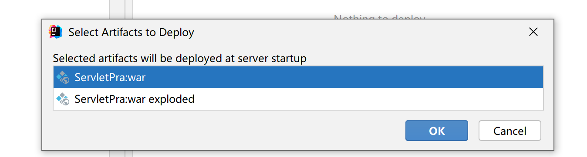

Web概述
JavaWeb就是用Java技术来解决相关web互联网领域的技术栈。
静态资源
- 静态资源主要包含HTML、CSS、JavaScript、图片等，主要负责页面的展示。
动态资源
- 动态资源主要包含Servlet、JSP等，主要用来负责逻辑处理。
- 动态资源处理完逻辑后会把得到的结果交给静态资源来进行展示，动态资源和静态资源要结合一起使用。
数据库
数据库主要负责存储数据。
整个Web的访问过程就如下图所示:

(1)浏览器发送一个请求到服务端，去请求所需要的相关资源;
(2)资源分为动态资源和静态资源,动态资源可以是使用Java代码按照Servlet和JSP的规范编写的内容;
(3)在Java代码可以进行业务处理也可以从数据库中读取数据;
(4)拿到数据后，把数据交给HTML页面进行展示,再结合CSS和JavaScript使展示效果更好;
(5)服务端将静态资源响应给浏览器;
(6)浏览器将这些资源进行解析;
(7)解析后将效果展示在浏览器，用户就可以看到最终的结果。
Web服务器
- Web服务器:负责解析 HTTP 协议，解析请求数据，并发送响应数据
- 浏览器按照HTTP协议发送请求和数据，后台就需要一个Web服务器软件来根据HTTP协议解析请求和数据，然后把处理结果再按照HTTP协议发送给浏览器
- Web服务器软件有很多，这里学习的目前最为常用的Tomcat服务器
HTTP
HyperText Transfer Protocol，超文本传输协议，规定了浏览器和服务器之间数据传输的规则。
- 数据传输的规则指的是请求数据和响应数据需要按照指定的格式进行传输。
HTTP协议特点
HTTP协议有它自己的一些特点，分别是:
基于TCP协议: 面向连接，安全
TCP是一种面向连接的(建立连接之前是需要经过三次握手)、可靠的、基于字节流的传输层通信协议，在数据传输方面更安全。
基于请求-响应模型的:一次请求对应一次响应
请求和响应是一一对应关系
HTTP协议是无状态协议:对于事物处理没有记忆能力。每次请求-响应都是独立的
无状态指的是客户端发送HTTP请求给服务端之后，服务端根据请求响应数据，响应完后，不会记录任何信息。这种特性有优点也有缺点，
- 缺点:多次请求间不能共享数据
- 优点:速度快
请求之间无法共享数据会引发的问题，如：
- 电商购物，加入购物车和去购物车结算是两次请求，
- HTTP协议的无状态特性，加入购物车请求响应结束后，并未记录加入购物车是何商品
- 发起去购物车结算的请求后，因为无法获取哪些商品加入了购物车，会导致此次请求无法正确展示数据
Java中提供会话技术（cookie，session）解决此类问题
请求数据格式
请求数据总共分为三部分内容，分别是请求行、请求头、请求体
请求行: HTTP请求中的第一行数据，请求行包含三块内容，分别是 GET[请求方式] /[请求URL路径] HTTP/1.1[HTTP协议及版本]
请求方式有七种,最常用的是GET和POST
请求头: 第二行开始，格式为key: value形式
请求头中会包含若干个属性，常见的HTTP请求头有:
Host: 表示请求的主机名 User-Agent: 浏览器版本,例如Chrome浏览器的标识类似Mozilla/5.0 ...Chrome/79，IE浏览器的标识类似Mozilla/5.0 (Windows NT ...)like Gecko； Accept：表示浏览器能接收的资源类型，如text/*，image/*或者*/*表示所有； Accept-Language：表示浏览器偏好的语言，服务器可以据此返回不同语言的网页； Accept-Encoding：表示浏览器可以支持的压缩类型，例如gzip, deflate等。服务端可以根据请求头中的内容来获取客户端的相关信息，有了这些信息服务端就可以处理不同的业务需求
- 知道浏览器类型后，使用不同代码，可以解决浏览器兼容问题
请求体: POST请求的最后一部分，存储请求参数（如：username和password）
- GET请求请求参数在请求行中，没有请求体，POST请求请求参数在请求体中
- GET请求请求参数大小有限制，POST没有
响应数据格式
响应数据总共分为三部分内容，分别是响应行、响应头、响应体
响应行：响应数据的第一行,响应行包含三块内容，分别是 HTTP/1.1[HTTP协议及版本] 200[响应状态码] ok[状态码的描述]
响应头：第二行开始，格式为key：value形式
响应头中会包含若干个属性，常见的HTTP响应头有:
Content-Type：表示该响应内容的类型，例如text/html，image/jpeg； Content-Length：表示该响应内容的长度（字节数）； Content-Encoding：表示该响应压缩算法，例如gzip； Cache-Control：指示客户端应如何缓存，例如max-age=300表示可以最多缓存300秒响应体： 最后一部分。存放响应数据
Tomcat
Web服务器是一个应该程序（软件），对HTTP协议的操作进行封装，使得程序员不必直接对协议进行操作，让Web开发更加便捷。主要功能是”提供网上信息浏览服务”。
对于Web服务器实现的方案有很多，Tomcat只是其中的一种，而除了Tomcat以外，有Weblogic，jetty，WebSphere等
Tomcat简介：
Tomcat是Apache软件基金会一个核心项目，是一个开源免费的轻量级Web服务器，支持Servlet/JSP少量JavaEE规范。
概念中提到了JavaEE规范，那什么又是JavaEE规范呢?
JavaEE: Java Enterprise Edition,Java企业版。指Java企业级开发的技术规范总和。包含13项技术规范:JDBC、JNDI、EJB、RMI、JSP、Servlet、XML、JMS、Java IDL、JTS、JTA、JavaMail、JAF。
因为Tomcat支持Servlet/JSP规范，所以Tomcat也被称为Web容器、Servlet容器。Servlet需要依赖Tomcat才能运行。
Tomcat的官网: https://tomcat.apache.org/ 从官网上可以下载对应的版本进行使用。
Tomcat使用注意事项：
双击: bin\startup.bat启动，.bat是windows可自执行文件，.sh是Linux可执行文件
关闭有三种方式
直接x掉运行窗口:强制关闭[不建议]
bin\shutdown.bat：正常关闭
ctrl+c： 正常关闭
修改配置在conf文件夹下的server.xml文件
Tomcat的端口号取值范围是0-65535之间任意未被占用的端口，如果设置的端口号被占用，启动的时候就会包如下的错误

Tomcat启动的时候，启动窗口一闪而过: 需要检查JAVA_HOME环境变量是否正确配置
Tomcat项目部署：
将项目放置到webapps目录下，即部署完成。
一般JavaWeb项目会被打包称war包，然后将war包放到Webapps目录下，Tomcat会自动解压缩war文件
Maven创建Web项目
Maven Web项目结构：

开发完成部署的Web项目：

- 开发项目通过执行Maven打包命令package,可以获取到部署的Web项目目录
- 编译后的Java字节码文件和resources的资源文件，会被放到WEB-INF下的classes目录下
- pom.xml中依赖坐标对应的jar包，会被放入WEB-INF下的lib目录下
IDEA使用Tomcat
点击Add configuration
点击+号，点到Tomcat local添加本地的Tomcat
点击artifact
添加war包

注意事项：

Tomcat Maven插件
在pom.xml中添加Tomcat插件
<build> <plugins> <!--Tomcat插件 --> <plugin> <groupId>org.apache.tomcat.maven</groupId> <artifactId>tomcat7-maven-plugin</artifactId> <version>2.2</version> </plugin> </plugins> </build>安装maven helper插件
直接run(也可以直接直接在Add configuration处添加maven中的Tomcat)
使用Maven Tomcat插件，要想修改Tomcat的端口和访问路径，可以直接修改pom.xml
<build> <plugins> <!--Tomcat插件 --> <plugin> <groupId>org.apache.tomcat.maven</groupId> <artifactId>tomcat7-maven-plugin</artifactId> <version>2.2</version> <configuration> <port>80</port><!--访问端口号 --> <!--项目访问路径 未配置访问路径: http://localhost:80/tomcat-demo2/a.html 配置/后访问路径: http://localhost:80/a.html 如果配置成 /hello,访问路径会变成什么? 答案: http://localhost:80/hello/a.html --> <path>/</path> </configuration> </plugin> </plugins> </build>
Servlet
Servlet是JavaWeb最为核心的内容，它是Java提供的一门动态web资源开发技术。
使用Servlet就可以实现，根据不同的登录用户在页面上动态显示不同内容。
- Servlet是JavaEE规范之一，其实就是一个接口，将来我们需要定义Servlet类实现Servlet接口，并由web服务器运行Servlet
快速入门
导入Servlet依赖坐标
<dependency> <groupId>javax.servlet</groupId> <artifactId>javax.servlet-api</artifactId> <version>3.1.0</version> <!-- provided指的是在编译和测试过程中有效,最后生成的war包时不会加入 因为Tomcat的lib目录中已经有servlet-api这个jar包，如果在生成war包的时候生效就会和Tomcat中的jar包冲突，导致报错 --> <scope>provided</scope> </dependency>- 定义一个类，实现Servlet接口，并重写接口中所有方法，并在service方法中输入一句话
public class ServletDemo1 implements Servlet { public void service(ServletRequest servletRequest, ServletResponse servletResponse) throws ServletException, IOException { System.out.println("servlet hello world~"); } public void init(ServletConfig servletConfig) throws ServletException { } public ServletConfig getServletConfig() { return null; } public String getServletInfo() { return null; } public void destroy() { } }在类上使用@WebServlet注解，配置该Servlet的访问路径
@WebServlet("/demo1")启动
执行过程分析
- 浏览器发出
http://localhost:8080/web-demo/demo1请求，从请求中可以解析出三部分内容，分别是localhost:8080、web-demo、demo1- 根据
localhost:8080可以找到要访问的Tomcat Web服务器 - 根据
web-demo可以找到部署在Tomcat服务器上的web-demo项目 - 根据
demo1可以找到要访问的是项目中的哪个Servlet类，根据@WebServlet后面的值进行匹配
- 根据
- 找到ServletDemo1这个类后，Tomcat Web服务器就会为ServletDemo1这个类创建一个对象，然后调用对象中的service方法
- ServletDemo1实现了Servlet接口，所以类中必然会重写service方法供Tomcat Web服务器进行调用
- service方法中有ServletRequest和ServletResponse两个参数，ServletRequest封装的是请求数据，ServletResponse封装的是响应数据，后期我们可以通过这两个参数实现前后端的数据交互
Servlet由web服务器创建，Servlet方法由web服务器调用
因为我们自定义的Servlet,必须实现Servlet接口并复写其方法，而Servlet接口中有service方法
生命周期
Servlet运行在Servlet容器(web服务器)中，其生命周期由容器来管理，分为4个阶段：
- 加载和实例化：默认情况下，当Servlet第一次被访问时，由容器创建Servlet对象
默认情况，Servlet会在第一次访问被容器创建，但是如果创建Servlet比较耗时的话，那么第一个访问的人等待的时间就比较长，用户的体验就比较差，那么我们能不能把Servlet的创建放到服务器启动的时候来创建，具体如何来配置?
@WebServlet(urlPatterns = "/demo1",loadOnStartup = 1)
loadOnstartup的取值有两类情况
（1）负整数:第一次访问时创建Servlet对象
（2）0或正整数:服务器启动时创建Servlet对象，数字越小优先级越高- 初始化：在Servlet实例化之后，容器将调用Servlet的init()方法初始化这个对象，完成一些如加载配置文件、创建连接等初始化的工作。该方法只调用一次
- 请求处理：每次请求Servlet时，Servlet容器都会调用Servlet的**service()**方法对请求进行处理
- 服务终止：当需要释放内存或者容器关闭时，容器就会调用Servlet实例的**destroy()**方法完成资源的释放。在destroy()方法调用之后，容器会释放这个Servlet实例，该实例随后会被Java的垃圾收集器所回收
常用方法
- 初始化方法，在Servlet被创建时执行，只执行一次
void init(ServletConfig config) - 提供服务方法， 每次Servlet被访问，都会调用该方法
void service(ServletRequest req, ServletResponse res)- 销毁方法，当Servlet被销毁时，调用该方法。在内存释放或服务器关闭时销毁Servlet
void destroy() 剩下的两个方法是:
- 获取Servlet信息
String getServletInfo()
//该方法用来返回Servlet的相关信息，没有什么太大的用处，一般我们返回一个空字符串即可
public String getServletInfo() {
return "";
}- 获取ServletConfig对象
ServletConfig getServletConfig()ServletConfig对象，在init方法的参数中有，而Tomcat Web服务器在创建Servlet对象的时候会调用init方法，必定会传入一个ServletConfig对象，我们只需要将服务器传过来的ServletConfig进行返回即可。
体系结构

因为我们将来开发B/S架构的web项目，都是针对HTTP协议，所以我们自定义Servlet,会通过继承HttpServlet
具体的编写格式如下:
@WebServlet("/demo2")
public class ServletDemo4 extends HttpServlet {
@Override
protected void doGet(HttpServletRequest req, HttpServletResponse resp) throws ServletException, IOException {
//TODO GET 请求方式处理逻辑
System.out.println("get...");
}
@Override
protected void doPost(HttpServletRequest req, HttpServletResponse resp) throws ServletException, IOException {
//TODO Post 请求方式处理逻辑
System.out.println("post...");
}
}- 要想发送一个GET请求，请求该Servlet，只需要通过浏览器发送
http://localhost:8080/web-demo/demo4,就能看到doGet方法被执行了 - 要想发送一个POST请求，请求该Servlet，单单通过浏览器是无法实现的，这个时候就需要编写一个form表单来发送请求，在webapp下创建一个
a.html页面，内容如下:
<!DOCTYPE html>
<html lang="en">
<head>
<meta charset="UTF-8">
<title>Title</title>
</head>
<body>
<form action="/web-demo/demo2" method="post">
<input name="username"/><input type="submit"/>
</form>
</body>
</html>启动测试，即可看到doPost方法被执行了。
其实HttpServlet已经继承了Servlet，并重写了一些方法，我们可以翻看源码看一下，不仅可以处理GET和POST还可以处理其他五种请求方式。
protected void service(HttpServletRequest req, HttpServletResponse resp)
throws ServletException, IOException
{
String method = req.getMethod();
if (method.equals(METHOD_GET)) {
long lastModified = getLastModified(req);
if (lastModified == -1) {
// servlet doesn't support if-modified-since, no reason
// to go through further expensive logic
doGet(req, resp);
} else {
long ifModifiedSince = req.getDateHeader(HEADER_IFMODSINCE);
if (ifModifiedSince < lastModified) {
// If the servlet mod time is later, call doGet()
// Round down to the nearest second for a proper compare
// A ifModifiedSince of -1 will always be less
maybeSetLastModified(resp, lastModified);
doGet(req, resp);
} else {
resp.setStatus(HttpServletResponse.SC_NOT_MODIFIED);
}
}
} else if (method.equals(METHOD_HEAD)) {
long lastModified = getLastModified(req);
maybeSetLastModified(resp, lastModified);
doHead(req, resp);
} else if (method.equals(METHOD_POST)) {
doPost(req, resp);
} else if (method.equals(METHOD_PUT)) {
doPut(req, resp);
} else if (method.equals(METHOD_DELETE)) {
doDelete(req, resp);
} else if (method.equals(METHOD_OPTIONS)) {
doOptions(req,resp);
} else if (method.equals(METHOD_TRACE)) {
doTrace(req,resp);
} else {
//
// Note that this means NO servlet supports whatever
// method was requested, anywhere on this server.
//
String errMsg = lStrings.getString("http.method_not_implemented");
Object[] errArgs = new Object[1];
errArgs[0] = method;
errMsg = MessageFormat.format(errMsg, errArgs);
resp.sendError(HttpServletResponse.SC_NOT_IMPLEMENTED, errMsg);
}
}urlPattern配置
Servlet类编写好后，要想被访问到，就需要配置其访问路径
一个Servlet,可以配置多个urlPattern
@WebServlet(urlPatterns = {"/demo3","/demo4"})配置规则
精确匹配
目录匹配
@WebServlet(urlPatterns = "/user/*")扩展名匹配
@WebServlet(urlPatterns = "*.do")任意匹配
@WebServlet(urlPatterns = "/")注意:
/和/*的区别当我们的项目中的Servlet配置了 “/“,会覆盖掉tomcat中的DefaultServlet,当其他的url-pattern都匹配不上时都会走这个Servlet
当我们的项目中配置了”/*”,意味着匹配任意访问路径
DefaultServlet是用来处理静态资源，如果配置了”/“会把默认的覆盖掉，就会引发请求静态资源的时候没有走默认的而是走了自定义的Servlet类，最终导致静态资源不能被访问